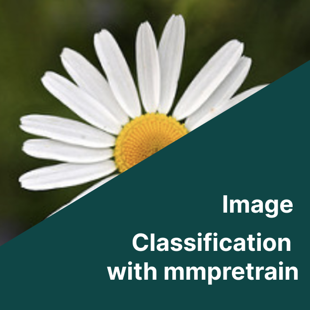

A.I/Machine Learning
Most of my my machine learning knowledge is from software Dev certifcation, a formal showcase of my formal eduction and self taught journey of innovation and data-driven insights. discovering the power of algorithms to unlock hidden patterns and drive intelligent decision-making.
Q-learning CliffWalk
Reinforcement Learning via Q-learning methodology

Flower Classifier
Image Classification with mmpretrain.

Pokedex using CNN
Classifying pokemon images to be fire, water or grass.

File based Chat-Bot
Openai Bot chats and learns from uploaded files (PDF or TXT files).